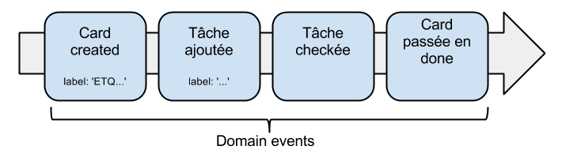
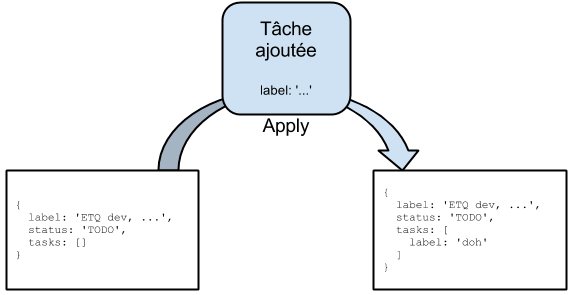
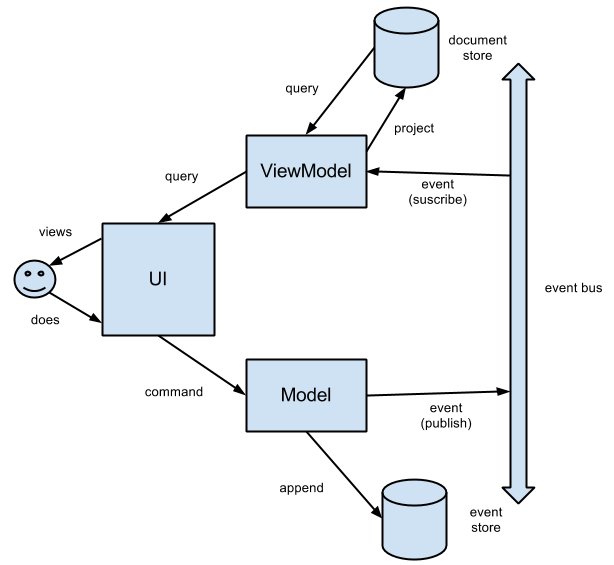
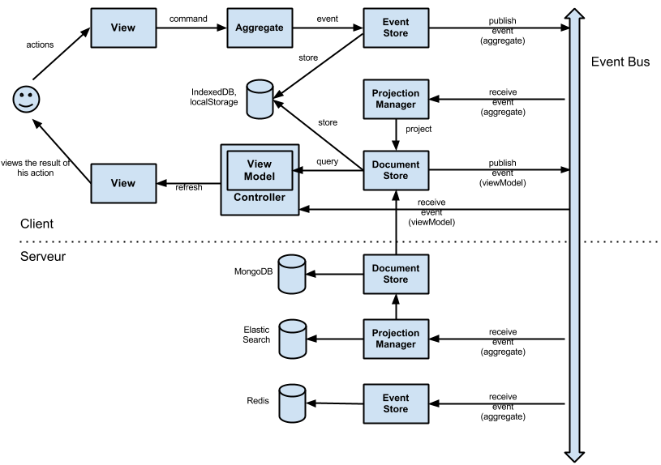

Event Sourcing
Raphaël Rougeron / @goldoraf
Mutable State
- Les ORMs
- détectent les changements d'états du modèle pour les persister en BD
- et c'est... lent !
- Les frameworks type Ember, Angular...
- observent les changements d'états du modèle pour rafraichir les vues
- et c'est... lent !
Et en plus...
...on perd de la donnée !
L'utilisateur crée une card
{
label: 'ETQ dev, je veux roxer du poney',
status: 'TODO',
tasks: []
}
L'utilisateur ajoute une tâche
{
label: 'ETQ dev, je veux roxer du poney',
status: 'TODO',
tasks: [
{ label: 'roxer du poney', checked: false }
]
}
L'utilisateur valide une tâche
{
label: 'ETQ dev, je veux roxer du poney',
status: 'TODO',
tasks: [
{ label: 'roxer du poney', checked: true }
]
}
L'utilisateur passe la card en done
{
label: 'ETQ dev, je veux roxer du poney',
status: 'DONE',
tasks: [
{ label: 'roxer du poney', checked: true }
]
}
Et là Elyes arrive...
“Dites les gars, les clients voudraient connaitre le temps moyen pour qu'une card passe en done. C'est très simple, non ?”
Fabien
Olivier

Emmanuel
Benoit
Raph
Christophe
Nicolas

Blandine
Enter Event Sourcing
- Une action entraine l'émission d'un event
- Seuls les events sont persistés
- L'état d'un modèle est reconstitué en rejouant les events
- La requête d'Elyes n'est qu'une projection spécifique de nos events
Petit point perfs
- FP : the final state is a left-fold function of the previous states
- En gros, c'est le Reduce du Map/Reduce
- Bien codé, c'est non seulement rapide mais surtout distribuable et donc scalable !
- Et puis il y a le snapshotting...
CQRS / ES
Archi client/serveur
Demo time !
Avantages
- Simplicité
- Events = objets simples
- Pas d'object-relational impedance mismatch
- Code plus simple et expressif, moins de layering nécessaire
- Performance
- La persistence est une opération append-only
- Scalabilité
- Flexibilité et auditabilité
- On dispose de tout l'historique du système
- On peut répondre à toute question du business
Avantages
- Event-oriented architecture
- Systèmes (très) low-coupled
- Redondance facile à mettre en place (SLA)
- Intégration aisée avec d'autres systèmes (cf EIP)
Points d'attention
- Performance
- La stratégie de snapshotting est cruciale
- Consistence éventuelle
- Coût du stockage ?
- Versioning
- Le système doit savoir gérer des events et aggregates de versions différentes
- Requêtage
- On ne peut pas interroger directement ses données comme avec une BD relationnelle
- Modélisation
- Définir les types d'events est un art à part entière (DDD)
(Autres) Avantages
- Offline ?...................................Done !
- Synchro ?...................................LOL !
- Undo ?......................................Easy !
- Versioning ?................................Check !
- Activité ?..................................Muhahaha !